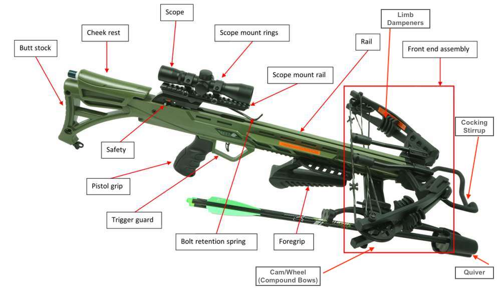
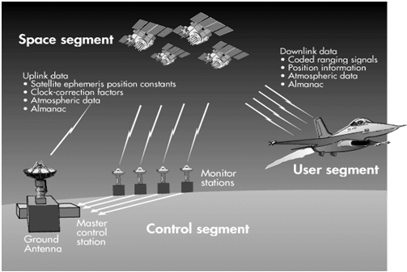

<!DOCTYPE html>
<html>
<head>
    <title>Matthew Rennekamp q370 Final</title>
    <script src="https://unpkg.com/jspsych@7.3.3"></script>
    <script src="https://unpkg.com/@jspsych/plugin-html-button-response@1.1.2"></script>
    <script src="https://unpkg.com/@jspsych/plugin-survey-html-form@1.0.2"></script>
    <script src="https://unpkg.com/@jspsych/plugin-preload@1.1.2"></script>
    <link href="https://unpkg.com/jspsych@7.3.3/css/jspsych.css" rel="stylesheet" type="text/css" />
    <script src="https://unpkg.com/@jspsych-contrib/plugin-pipe"></script>
    
    <style>
        body { font-family: 'Segoe UI', 'Roboto', Helvetica, Arial, sans-serif; background-color: #f4f7f6; color: #333; }
        
        .editor-desk {
            max-width: 800px; margin: 40px auto; background: white; padding: 40px;
            box-shadow: 0 4px 15px rgba(0,0,0,0.05); border: 1px solid #e0e0e0; border-radius: 8px;
        }
        
        .text-excerpt {
            background-color: #fffde7;
            border-left: 5px solid #f1c40f;
            padding: 20px;
            font-family: 'Georgia', serif;
            font-size: 15px;
            line-height: 1.6;
            text-align: left;
            margin: 20px 0;
            white-space: pre-wrap; 
        }

        /* --- BUTTON STYLES --- */
        .form-container { text-align: left; }
        .question-box { margin-bottom: 25px; }
        .question-title { font-weight: bold; margin-bottom: 10px; display: block; }
        
        .btn-group { display: flex; gap: 10px; flex-wrap: wrap; }
        .btn-option { display: none; } /* Hide radio */

        .btn-label {
            padding: 10px 20px; border: 2px solid #ccc; border-radius: 5px; cursor: pointer;
            background: white; color: #555; font-weight: 600; transition: all 0.2s ease;
            flex-grow: 1; text-align: center;
        }
        .btn-label:hover { border-color: #333; background: #f9f9f9; }
        .btn-option:checked + .btn-label {
            background-color: #2c3e50; color: white; border-color: #2c3e50;
            box-shadow: 0 2px 5px rgba(0,0,0,0.2);
        }

        .diagram-box {
            border: 2px dashed #b0bec5; background: #eceff1; height: 250px;
            display: flex; align-items: center; justify-content: center;
            font-weight: bold; color: #546e7a; margin: 20px 0; font-family: monospace;
        }
        .schematic-img {
            max-width: 100%; height: auto; max-height: 300px; display: block;
            margin: 20px auto; border: 1px solid #ccc; box-shadow: 2px 2px 8px rgba(0,0,0,0.1);
        }
        .phase-tag {
            background: #eee; padding: 5px 10px; border-radius: 4px; 
            font-size: 12px; font-weight: bold; text-transform: uppercase; letter-spacing: 1px;
        }
        input[type="text"], select {
            width: 100%; padding: 10px; margin: 5px 0 20px 0; display: inline-block;
            border: 1px solid #ccc; border-radius: 4px; box-sizing: border-box;
        }
    </style>
</head>
<body></body>
<script>

    // 1. CONFIGURATION
    const DATAPIPE_ID = "ndQ6c7eJMw76"; 

    var jsPsych = initJsPsych({
        on_finish: function() { jsPsych.data.displayData(); }
    });

    // --- 2. STIMULI CONFIGURATION ---

    // BLOCK 1: BASELINE (8 Items)
    var stimuli_baseline = [
        { text: "Think about the difference between squishing a stress ball and crushing a soda can. The ball follows the rules of \"elasticity\"—you apply force, it changes shape, but it snaps right back when you let go because the atoms act like tiny springs. But every material has a limit. If you push too hard, you cross a line where the atoms shift permanently and can't bounce back, just like the dented can.", correct_index: "3", type: 'Social' },
        { text: "Let us now take a mental ride on a merry-go-round—specifically, a rapidly rotating playground merry-go-round. You take the merry-go-round to be your frame of reference because you rotate together. In that non-inertial frame, you feel a fictitious force, named centrifugal force, trying to throw you off.", correct_index: "0", type: 'Textbook' },
        { text: "Flow from the heart comes from a large pressure reservoir into successively smaller tubes. The flow is not fully developed near some of the origins of arteries. Flow in these regions is similar to an entrance flow with a potential core and a developing boundary layer at the wall.", correct_index: "1", type: 'Journal' },
        { text: "The problem the model helps answer is that to explain these slow slips, other researchers reached for artificial friction laws, or explanations that included specific but fictional parameters like state variables. The new model—which was developed by Watanabe and co-author Ken Nakano—offers a simplified solution.", correct_index: "2", type: 'Website' },
        { text: "In physics, energy is usually like a boomerang—you throw it out (potential energy) and it comes back (kinetic energy). But friction is the friend who borrows money and never pays it back. It’s a \"nonconservative\" force because it takes your useful movement and scrambles it into random heat.", correct_index: "3", type: "Social" },
        { text: "A material strength depends on its microstructure, which in turn, is controlled by an engineering process. Strengthening mechanisms like work hardening, precipitate, and grain boundary strengthening can alter the strength of a material in a predictive, quantitative manner.", correct_index: "1", type: "Journal" },
        { text: "The mechanism for how heat is generated is now being determined. In other words, why do surfaces get warmer when rubbed? Essentially, atoms are linked with one another to form lattices. When surfaces rub, the surface atoms adhere and cause atomic lattices to vibrate—essentially creating sound waves.", correct_index: "0", type: "Textbook" },
        { text: "Some people think life breaks the laws of physics because nature usually likes chaos (entropy), yet life is super organized. But evolution isn't cheating; it’s just paying the bill with energy from the sun. Think of it like cleaning your room: you create a nice space, but you make a mess of the kitchen eating a snack.", correct_index: "3", type: "Social" }
    ];

    // BLOCK 2: POST-INDUCTION A (16 Items)
    var stimuli_block2 = [
        { text: "Your lungs are basically a massive collection of millions of tiny, wet bubbles called alveoli. Physics says that wet bubbles always want to shrink and collapse because surface tension pulls the liquid skin tight. But to stop them from collapsing completely, your body coats them with a special \"soap\" called surfactant.", correct_index: "3", type: 'Social' },
        { text: "It is shown that nonequilibrium may become a source of order and that irreversible processes may lead to a new type of dynamic states of matter called \"dissipative structures.\" The thermodynamic theory of such structures is outlined and a microscopic definition of irreversible processes is given.", correct_index: "1", type: 'Journal' },
        { text: "We now move from consideration of forces that affect the motion of an object to those that affect an object’s shape. If a bulldozer pushes a car into a wall, the car will not move but it will noticeably change shape. A change in shape due to the application of a force is a deformation.", correct_index: "0", type: 'Textbook' },
        { text: "After placing the oats, they let the slime mold spread naturally from the largest city or capital, and observed what routes it determined were most efficient. The slime mold repeatedly created routes that were strikingly similar to the ones laid out by decades of human engineering.", correct_index: "2", type: 'Website' },
        { text: "Conservation of angular momentum only applies when there is no torque about the vertical axis. A person moving on the rotating surface will exert a torque on it through friction and the conservation will therefore only apply to the man and the turntable together.", correct_index: "1", type: 'Journal' },
        { text: "Some people misunderstand the second law of thermodynamics, stated in terms of entropy, to say that the process of the evolution of life violates this law. Over time, complex organisms evolved from much simpler ancestors, representing a large decrease in entropy of the Earth’s biosphere.", correct_index: "0", type: 'Textbook' },
        { text: "Ever wonder why rubbing your hands together when it’s freezing actually warms them up? It’s not just because your skin is rough; it’s basically a microscopic mosh pit. When two surfaces slide past each other, the atoms get snagged and snap back, sending vibrations through the material.", correct_index: "3", type: 'Social' },
        { text: "Hou and Luo’s discovery caused a sensation. For more than 200 years, mathematicians had hunted for scenarios in which the Euler equations faltered. Many had performed numerical simulations that they thought were on track to produce singularities, but none held up under repeated experimentation.", correct_index: "2", type: 'Website' },
        { text: "Every species of living thing can make a copy of itself by exchanging energy and matter with its surroundings. One feature common to all such examples of spontaneous \"self-replication\" is their statistical irreversibility: clearly, it is much more likely that one bacterium should turn into two.", correct_index: "1", type: 'Journal' },
        { text: "A nonconservative force is one for which work depends on the path taken. Friction is a good example of a nonconservative force. Work done against friction depends on the length of the path between the starting and ending points. Because of this dependence on path, there is no potential energy associated with nonconservative forces.", correct_index: "0", type: 'Textbook' },
        { text: "Making that connection would require nothing less than establishing universal mathematical rules of elastic patterns. Tobasco has been working on this for years, studying equations that describe thin elastic materials — stuff that responds to a deformation by trying to spring back to its original shape.", correct_index: "2", type: 'Website' },
        { text: "If your tire gauge reads \"zero,\" you might think the tire is completely empty, like a vacuum. But actually, there’s still plenty of air in there—it just matches the pressure of the air outside. We design gauges to ignore the heavy weight of the atmosphere crushing down on us.", correct_index: "3", type: 'Social' },
        { text: "To investigate this issue further, we recently measured the force needed to slide one- and two-atom-thick solid films of xenon along a crystalline silver surface. Did this 25 percent increase stem from electronic effects? Probably not. Simulations indicate that the friction associated with sound waves is much greater.", correct_index: "1", type: "Journal" },
        { text: "The circulatory system provides many examples of Poiseuille’s law in action—with blood flow regulated by changes in vessel size and blood pressure. Blood vessels are not rigid but elastic. Adjustments to blood flow are primarily made by varying the size of the vessels, since the resistance is so sensitive to the radius.", correct_index: "0", type: "Textbook" },
        { text: "Why does your room always get messy, but never cleans itself by accident? It comes down to simple gambling odds. Imagine flipping five coins: getting a mix of heads and tails is super likely. But getting all five to land on heads is rare. The universe works the same way.", correct_index: "3", type: "Social" },
        { text: "Within the quark-parton picture, the ratio has to fall between 0.25 and 4.0 depending on the momentum distribution of the u and d quarks. Although the MIT-SLAC data come close to the lower limit of this range as x approaches 1, such a behavior is possible if the odd quark is the only charged parton.", correct_index: "1", type: "Journal" }
    ];

    // BLOCK 3: POST-INDUCTION B (16 Items)
    var stimuli_block3 = [
        { text: "From the standpoint of physics, there is one essential difference between living things and inanimate clumps of carbon atoms: The former tend to be much better at capturing energy from their environment and dissipating that energy as heat. Jeremy England has derived a mathematical formula that he believes explains this capacity.", correct_index: "2", type: 'Website' },
        { text: "Our lungs contain hundreds of millions of mucus-lined sacs called alveoli, which are very similar in size. You can exhale without muscle action by allowing surface tension to contract these sacs. Medical patients whose breathing is aided by a positive pressure respirator have air blown into the lungs.", correct_index: "0", type: 'Textbook' },
        { text: "In fluid mechanical terms, road vehicles are bluff bodies in very close proximity to the ground. Their detailed geometry is extremely complex. Internal and recessed cavities which communicate freely with the external flow and rotating wheels add to their geometrical and fluid mechanical complexity.", correct_index: "1", type: 'Journal' },
        { text: "Imagine you are glued to the wall of a spinning carnival ride. You swear there is a massive force crushing you outward, right? Physics actually calls this a \"fictitious\" force because it’s a total illusion caused by your perspective. In reality, your body just wants to fly off in a straight line.", correct_index: "3", type: "Social" },
        { text: "Like friction, the drag force always opposes the motion of an object. Unlike simple friction, the drag force is proportional to some function of the velocity of the object in that fluid. This functionality is complicated and depends upon the shape of the object, its size, its velocity, and the fluid it is in.", correct_index: "0", type: "Textbook" },
        { text: "Irvine and Matsuzawa tightly control the loops that are the blob’s building blocks and study the resulting confined turbulence up close and at length. The blob could yield insights into turbulence that physicists have been chasing for two centuries — in a quest that led Richard Feynman to call turbulence the most important unsolved problem.", correct_index: "2", type: "Website" },
        { text: "Think about how hard it is to drink a thick milkshake through a tiny coffee stirrer compared to a jumbo straw. Your blood vessels work on the exact same principle, but with even higher stakes. Because the flow of liquid depends on the radius to the fourth power, even a tiny squeeze of your arteries can shut down blood flow.", correct_index: "3", type: "Social" },
        { text: "If you limp into a gas station with a nearly flat tire, you will notice the tire gauge on the airline reads nearly zero when you begin to fill it. In fact, if there were a gaping hole in your tire, the gauge would read zero, even though atmospheric pressure exists in the tire. Why does the gauge read zero?", correct_index: "0", type: "Textbook" },
        { text: "For centuries, mathematicians have sought to understand and model the motion of fluids. The equations that describe how ripples crease the surface of a pond have also helped researchers to predict the weather, design better airplanes, and characterize how blood flows through the circulatory system.", correct_index: "2", type: "Website" },
        { text: "Pulmonary surfactant has important functions beyond reducing surface tension and altering mechanical properties. As the lung epithelium is in constant exposure to the environment, surfactant provides a crucial first line of defense against infection by enhancing the removal of pathogens.", correct_index: "1", type: "Journal" },
        { text: "If you’ve ever stuck your hand out the car window, you know air isn't nothing—it pushes back. But unlike simple friction, which stays mostly the same, air resistance (drag) gets exponentially meaner the faster you go. It’s a complex relationship that depends on how sleek your shape is and how thick the air feels.", correct_index: "3", type: "Social" },
        { text: "The circulatory system provides many examples of Poiseuille’s law in action—with blood flow regulated by changes in vessel size and blood pressure. Blood vessels are not rigid but elastic. Adjustments to blood flow are primarily made by varying the size of the vessels.", correct_index: "0", type: "Textbook" },
        { text: "Why are the past and future so different? It is not enough to simply posit a theory of initial conditions. As philosopher Huw Price has pointed out, any reasoning that applies to the initial conditions should also apply to the final conditions.", correct_index: "2", type: "Website" },
        { text: "Why does your room always get messy, but never cleans itself by accident? It comes down to simple gambling odds. Imagine flipping five coins: getting a mix of heads and tails is super likely because there are tons of ways to do it. But getting all five to land on heads is rare.", correct_index: "3", type: "Social" },
        { text: "To investigate this issue further, we recently measured the force needed to slide one- and two-atom-thick solid films of xenon along a crystalline silver surface. Did this 25 percent increase stem from electronic effects? Probably not. Simulations indicate that the friction associated with sound waves is much greater.", correct_index: "1", type: "Journal" },
        { text: "The essential point in the arguments presented above is that we accept the von-Neumann —Shannon expression for entropy, very literally, as a measure of the amount of uncertainty represented by a probability distribution; thus entropy becomes the primitive concept with which we work.", correct_index: "0", type: "Textbook" }
    ];


    // --- 3. HELPER FUNCTIONS ---

    // Generate HTML with Button-like Labels for the Survey
    function createEvaluationHtml(itemText) {
        return `
            <div class="form-container">
                <div class="text-excerpt">${itemText}</div>
                
                <div class="question-box">
                    <span class="question-title">1. Identify the Source:</span>
                    <div class="btn-group">
                        <input type="radio" name="source" value="0" id="src0" class="btn-option" required>
                        <label for="src0" class="btn-label">Textbook</label>

                        <input type="radio" name="source" value="1" id="src1" class="btn-option">
                        <label for="src1" class="btn-label">Scientific Journal</label>

                        <input type="radio" name="source" value="2" id="src2" class="btn-option">
                        <label for="src2" class="btn-label">Science Website</label>

                        <input type="radio" name="source" value="3" id="src3" class="btn-option">
                        <label for="src3" class="btn-label">Social Media</label>
                    </div>
                </div>

                <div class="question-box">
                    <span class="question-title">2. Is this explanation satisfying?</span>
                    <div class="btn-group">
                        <input type="radio" name="satisfying" value="Yes" id="satY" class="btn-option" required>
                        <label for="satY" class="btn-label">Yes</label>

                        <input type="radio" name="satisfying" value="No" id="satN" class="btn-option">
                        <label for="satN" class="btn-label">No</label>
                    </div>
                </div>

                <div class="question-box">
                    <span class="question-title">3. Are you curious to learn more?</span>
                    <div class="btn-group">
                        <input type="radio" name="curious" value="Yes" id="curY" class="btn-option" required>
                        <label for="curY" class="btn-label">Yes</label>

                        <input type="radio" name="curious" value="No" id="curN" class="btn-option">
                        <label for="curN" class="btn-label">No</label>
                    </div>
                </div>
            </div>
        `;
    }


    // --- 4. TRIAL CREATORS ---

    // A. INITIAL SURVEY
    var welcome_survey = {
        type: jsPsychSurveyHtmlForm,
        preamble: `<div class="editor-desk" style="margin-top:0;"><h1>Welcome, Junior Editor</h1><p>Please enter your details.</p></div>`,
        html: `
            <div style="text-align: left; max-width: 400px; margin: auto;">
                <label><strong>Enter an Alias (ID):</strong></label><input type="text" name="alias" required>
                <label><strong>Native Language:</strong></label>
                <select name="language"><option value="English">English</option><option value="Latvian">Latvian</option><option value="Serbian">Serbian</option><option value="Russian">Russian</option><option value="Other">Other</option></select>
            </div>
        `,
        button_label: "Begin Phase 1",
        on_finish: function(data){
            jsPsych.data.addProperties({ participant_alias: data.response.alias, native_language: data.response.language });
        }
    };

    // B. MANDATORY BASELINE (Block 1) - 8 Trials
    var createMandatoryBlock = function(item_list) {
        var trials = [];
        var limit = 8; // Restrict baseline to 8
        for (var i = 0; i < limit; i++) {
            var item = item_list[i];
            var trial = {
                type: jsPsychSurveyHtmlForm,
                preamble: `
                    <div class="editor-desk" style="padding-bottom:10px;">
                        <div style="font-size:12px; color:#999; text-align:right;">Baseline Batch: ${i+1} / ${limit}</div>
                        <span class="phase-tag">Evaluation Task</span>
                        <h3>Manuscript Assessment #${i+1}</h3>
                    </div>`,
                html: createEvaluationHtml(item.text),
                button_label: "File Report",
                data: { phase: 'baseline', trial_num: i+1, correct_answer: item.correct_index, source_type: item.type },
                on_finish: function(data){
                    data.correct = (parseInt(data.response.source) == data.correct_answer);
                    data.satisfying = data.response.satisfying;
                    data.curious = data.response.curious;
                }
            };
            trials.push(trial);
        }
        return trials;
    };

    // C. MIXED LOOP (Blocks 2 & 3) - 7 Mandatory + 9 Optional
    var createMixedBlock = function(phase_name, item_list) {
        var count = 0;
        var mandatory_limit = 7;
        var max_trials = 16; 
        
        // 1. Work Trial
        var work_trial = {
            type: jsPsychSurveyHtmlForm,
            preamble: function() {
                var status = count < mandatory_limit ? "Mandatory" : "Optional";
                return `
                    <div class="editor-desk" style="padding-bottom:10px;">
                        
                        <span class="phase-tag">${status} Phase</span>
                        <h3>Manuscript Assessment #${count+1}</h3>
                    </div>`;
            },
            html: function() {
                if(count >= item_list.length) return ""; 
                return createEvaluationHtml(item_list[count].text);
            },
            button_label: "File Report",
            data: { phase: phase_name, trial_type: 'work' },
            on_finish: function(data){
                if(count < item_list.length) {
                    var current_item = item_list[count]; 
                    data.correct = (parseInt(data.response.source) == current_item.correct_index);
                    data.source_type = current_item.type;
                    data.satisfying = data.response.satisfying;
                    data.curious = data.response.curious;
                }
                count++; 
            }
        };

        // 2. Decision Trial (Appears ONLY after trial 7+)
        var decision_trial = {
            type: jsPsychHtmlButtonResponse,
            stimulus: `<div class="editor-desk" style="text-align:center;"><p>Report filed.</p><hr><p><strong>Do you want to process another, or finish this block?</strong></p></div>`,
            choices: ['Process Next Item', 'Finish Block'], // index 1 = Finish
            data: { phase: phase_name, trial_type: 'persistence_check' },
            on_finish: function(data){ if(data.response == 1) { data.stop_loop = true; } }
        };

        // 3. Auto Advance (Appears BEFORE trial 7)
        var auto_advance = {
            type: jsPsychHtmlButtonResponse,
            stimulus: `<div class='editor-desk' style='text-align:center;'><p>Report filed.</p><p>Loading next mandatory item...</p></div>`,
            choices: [],
            trial_duration: 750
        };

        var loop_node = {
            timeline: [work_trial, {
                timeline: [decision_trial],
                conditional_function: function() { return count >= mandatory_limit; } 
            }, {
                timeline: [auto_advance],
                conditional_function: function() { return count < mandatory_limit; } 
            }],
            loop_function: function(data){
                // FIX: Use local data to check for Finish Block click
                var last_trials = data.values();
                var stop_signal = last_trials.find(t => t.stop_loop === true);
                
                if (stop_signal) return false; // Stop!
                if (count >= max_trials) return false; // Hit 16 limit
                if (count >= item_list.length) return false; // Run out of stimuli
                return true;
            }
        };
        return loop_node;
    };


    // --- 5. INDUCTION STIMULI ---

    var illusion_crossbow = {
        type: jsPsychHtmlButtonResponse,
        stimulus: `
            <div class="editor-desk" style="border-top: 5px solid #27ae60;">
                <span class="phase-tag">Schematic Review</span>
                <h2>The Crossbow</h2>
                
                
                <p><em>Some things are well-understood: almost everyone knows how and why they work. That is they can tell you about all the parts and how they work together. One such example might be the crossbow. Most people know how it works, e.g., that it has a stiff, flexible piece of metal as a bow with a wire or strong line; that the bow is permanently mounted on a block of wood or metal; that the wire is pulled back by something that gives a mechanical advantage, either a lever, or small block and tackle, or by a crank wound around a spool that pulls a wire attached to the bow wire. The bow wire is then held back by a pin that is connected to a trigger, and an arrow is set in front of it. Often the pin is forked so the arrow can sit directly in the wire. The pin is directly connected to the trigger so that when you pull on the trigger, it causes it to pivot around a point such that the end that is the pin moves downwards and releases the bow wire. When the pin releases the string, the bow very quickly un-flexes, rapidly imparting all the energy stored in the flexed bow to the arrow.</em></p>
            </div>
        `,
        choices: ['I have read this (Begin Work Batch)'],
        data: { condition: 'High_Efficacy_Crossbow', phase: 'induction' }
    };

    var illusion_gps = {
        type: jsPsychHtmlButtonResponse,
        stimulus: `
            <div class="editor-desk" style="border-top: 5px solid #c0392b;">
                <span class="phase-tag">Schematic Review</span>
                <h2>GPS</h2>
                 
                <p><em>How does the DGPS calculate even more accurate position than the GPS? Differential Global Positioning System (DGPS) is an enhancement to Global Positioning System that provides improved location accuracy, from the 15-meter nominal GPS accuracy to about 10 cm in case of the best implementations. DGPS uses a network of fixed ground-based reference stations to broadcast the difference between the positions indicated by the GPS satellite systems and the known fixed positions. These stations broadcast the difference between the measured satellite pseudo ranges and actual (internally computed) pseudo ranges, and receiver stations may correct their pseudo ranges by the same amount. The digital correction signal is typically broadcast locally over ground-based transmitters of shorter range. The Pseudo Range is the pseudo distance between a satellite and a navigation satellite receiver for instance Global Positioning System (GPS) receivers. To determine its position, a satellite navigation receiver will determine the ranges to (at least) four satellites as well as their positions at time of transmitting. Knowing the satellites’ orbital parameters, these positions can be calculated for any point in time. The Pseudo Ranges of each satellite are obtained by multiplying the speed of light by the time the signal has taken from the satellite to the receiver. </em></p>
            </div>
        `,
        choices: ['I have read this (Begin Work Batch)'],
        data: { condition: 'Low_Efficacy_GPS', phase: 'induction' }
    };

    var inductions = [
        { induction: illusion_crossbow, label: "Crossbow_Block", items: stimuli_block2 }, 
        { induction: illusion_gps, label: "GPS_Block", items: stimuli_block3 }
    ];
    var shuffled_order = jsPsych.randomization.shuffle(inductions);


    // --- 6. TIMELINE ASSEMBLY ---

    var timeline = [];

    // 1. Welcome
    timeline.push(welcome_survey);

    // 2. Baseline (8 Mandatory)
    timeline.push(...createMandatoryBlock(stimuli_baseline));
    timeline.push({ type: jsPsychHtmlButtonResponse, stimulus: "<h3>Block 1 Complete.</h3><p>Rest for a moment.</p>", choices: ['Start Block 2'] });

    // 3. Block 2 (7 Mandatory + 9 Optional)
    timeline.push(shuffled_order[0].induction);
    timeline.push(createMixedBlock(shuffled_order[0].label, shuffled_order[0].items));
    timeline.push({ type: jsPsychHtmlButtonResponse, stimulus: "<h3>Block 2 Complete.</h3><p>Rest for a moment.</p>", choices: ['Start Block 3'] });

    // 4. Block 3 (7 Mandatory + 9 Optional)
    timeline.push(shuffled_order[1].induction);
    timeline.push(createMixedBlock(shuffled_order[1].label, shuffled_order[1].items));

    // --- 7. DATA UPLOAD ---
    var upload_trial = {
        type: jsPsychHtmlButtonResponse,
        stimulus: `<p>Uploading...</p><div style="width:50px; height:50px; border:5px solid #ccc; border-top:5px solid #333; border-radius:50%; animation: spin 1s linear infinite; margin:auto;"></div><style>@keyframes spin {0% {transform: rotate(0deg);} 100% {transform: rotate(360deg);}}</style>`,
        choices: [],
        on_load: function() {
            var filename = "science_editor_" + jsPsych.data.get().values()[0].participant_alias + ".csv";
            fetch("https://pipe.jspsych.org/api/data/", {
                method: "POST",
                headers: { "Content-Type": "application/json", "Accept": "*/*" },
                body: JSON.stringify({ experimentID: DATAPIPE_ID, filename: filename, data: jsPsych.data.get().csv() })
            }).then(r => jsPsych.finishTrial({success: r.ok})).catch(e => jsPsych.finishTrial({success: false}));
        }
    };

    timeline.push({ type: jsPsychHtmlButtonResponse, stimulus: `<h3>Experiment Complete</h3><p>Submit data.</p>`, choices: ['Submit'] });
    timeline.push(upload_trial);
    timeline.push({ type: jsPsychHtmlButtonResponse, stimulus: "<h3>Data Sent!</h3><p>Close window.</p>", choices: ['Close'] });

    timeline.push({ 
        type: jsPsychHtmlButtonResponse, 
        stimulus: "<h3>Thank you!</h3><p>Just in case,</p><p>Please click below to download a copy for your records. Email to mdrennek@iu.edu</p>", 
        choices: ['Download Data & Exit'],
        on_finish: function() {
            var participant = jsPsych.data.get().values()[0].participant_alias || "unknown";
            jsPsych.data.get().localSave('csv', "science_editor_" + participant + ".csv");
        }
    });

    jsPsych.run(timeline);

</script>
</html>